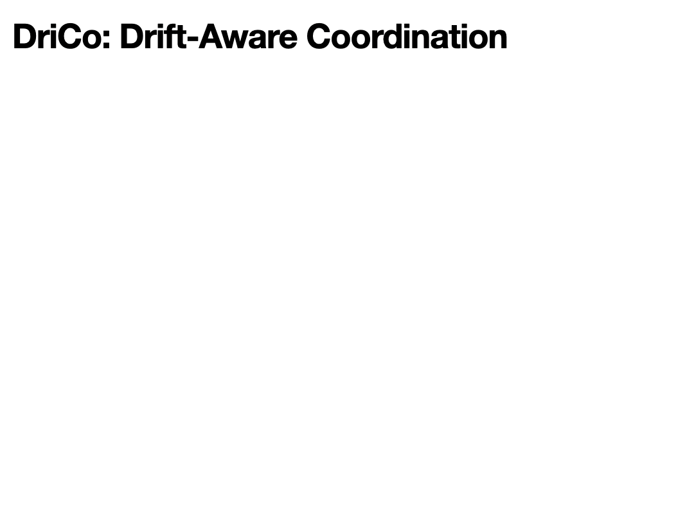
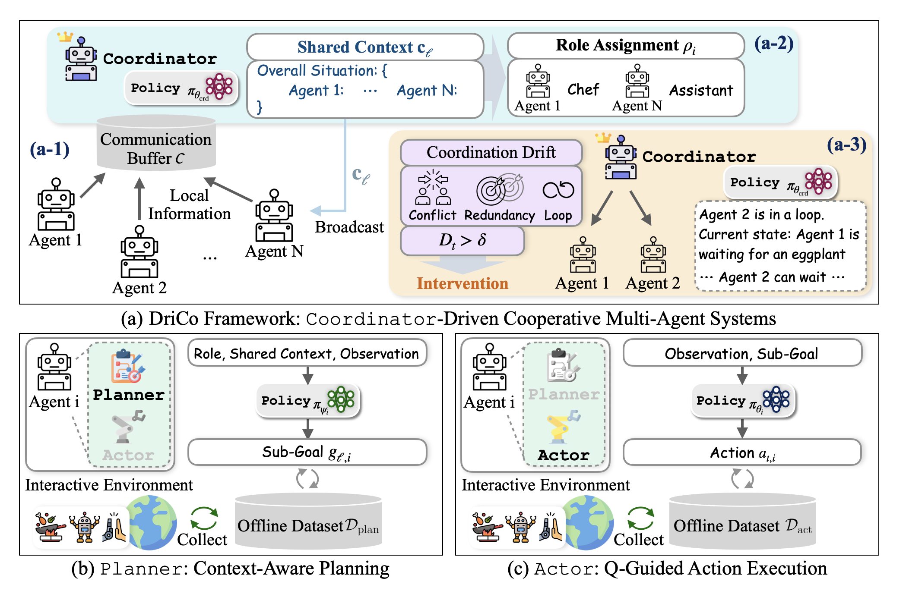
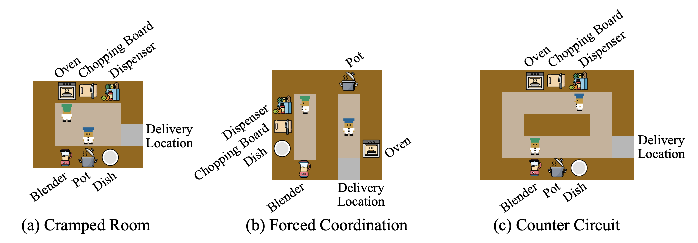
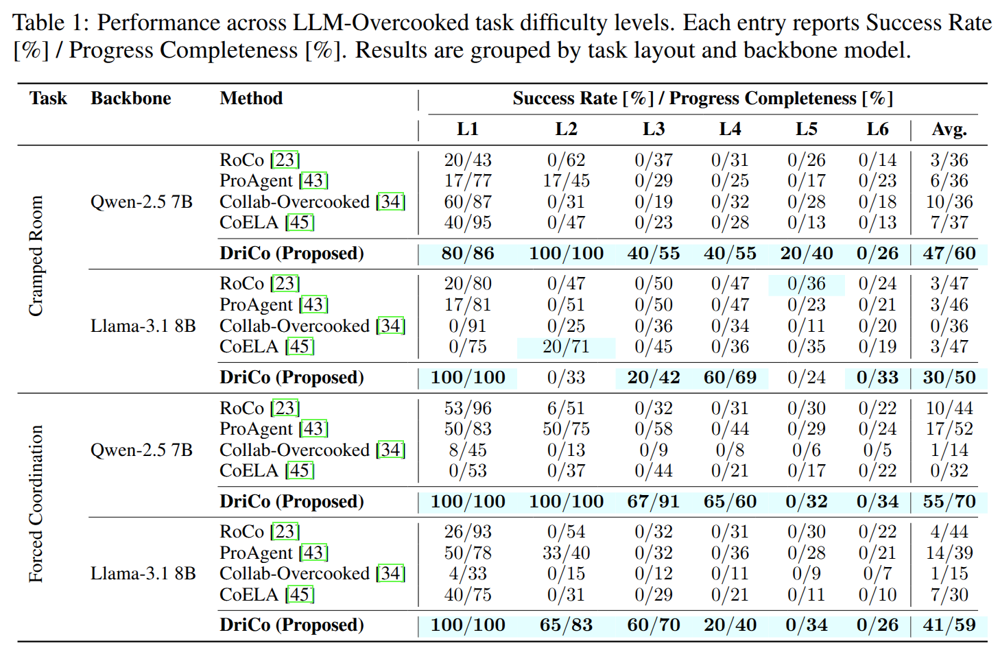
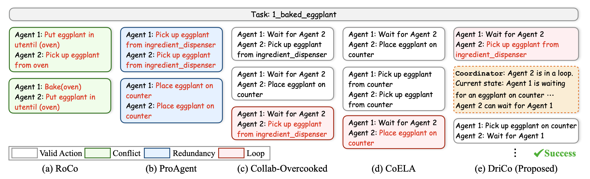
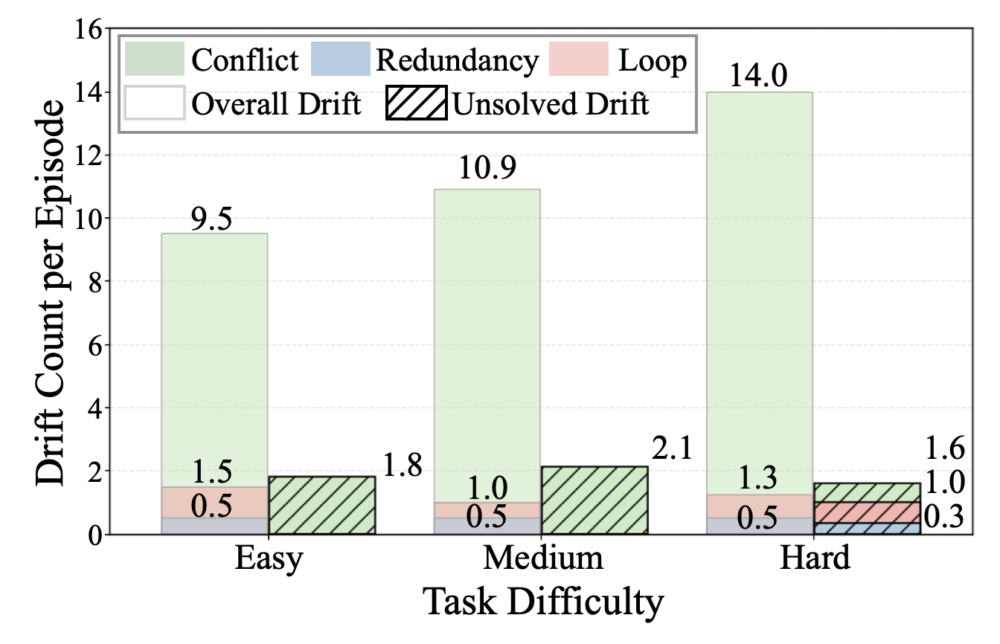
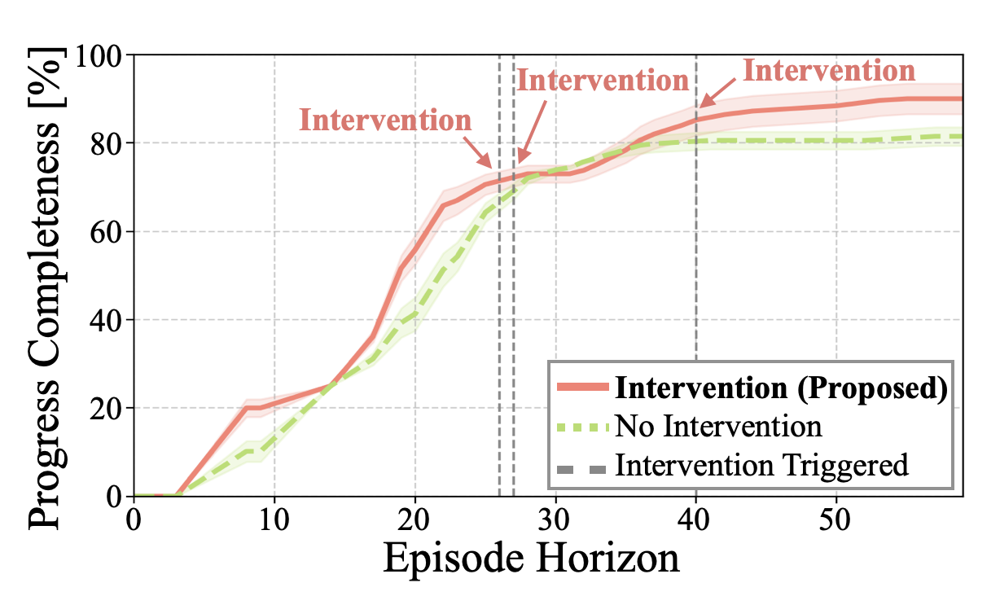

1
Coordination drift
A measurable abstraction for long-horizon team-level misalignment, covering conflicts, redundant sub-goals, and looping behaviors.
A coordinator-driven framework that detects and mitigates coordination drift in LLM-based multi-agent systems through , targeted intervention, and preference-based optimization.
DriCo introduces an explicit coordinator that aggregates agent-level information into , assigns roles, and intervenes when conflict, redundancy, or loops emerge. Agents use a hierarchical policy: a planner generates team-aware sub-goals, while an actor executes primitive actions with value-aware guidance.

A measurable abstraction for long-horizon team-level misalignment, covering conflicts, redundant sub-goals, and looping behaviors.
A coordinator constructs team-level shared context and role assignments from dispersed local observations and sub-goals.
When drift exceeds a threshold, the coordinator revises context and selectively asks affected agents to regenerate sub-goals.
Each agent uses a planner for high-level sub-goal generation and an actor for low-level action execution.
Coordinator and actor policies are optimized using preference objectives that favor lower drift and higher value actions.
A language-oriented Overcooked-AI extension with separate training/evaluation environments, diverse layouts, recipes, and held-out task compositions.
Agents send local observations and candidate sub-goals to a communication buffer. The coordinator uses this buffer as the team-level coordination state.
The coordinator summarizes team state into shared context and assigns roles. Planners condition on role, local observation, and shared context to generate sub-goals.
If trigger drift is high, the coordinator updates context and asks affected agents to revise their sub-goals, reducing conflict and redundancy while recovering from loops.

DriCo scores candidate shared contexts by the negative trigger drift they induce. Lower drift means more coherent team-level behavior, so preference learning increases the likelihood of contexts that improve downstream coordination.

DriCo is evaluated on LLM-Overcooked, an LLM-oriented extension of Overcooked-AI designed for language-conditioned goals, structured recipes, and long-horizon multi-agent coordination.
DriCo reaches 55% average success and 70% progress completeness on Forced Coordination with Qwen-2.5 7B, outperforming all listed baselines in the same setting.

Drift analysis indicates that the coordinator keeps occurrence rates lower, especially on harder task levels where loops accumulate without shared-context intervention.
In the Baked Eggplant case study, DriCo detects loop states and restores progress through targeted coordination updates, while baseline agents exhibit conflict, redundancy, or repeated wait-and-place behaviors.

DriCo maintains lower conflict, redundancy, and loop occurrence rates, especially on harder tasks where the baseline accumulates loop-driven drift.

Intervention-triggered shared-context updates help DriCo continue improving progress completeness instead of plateauing early.
